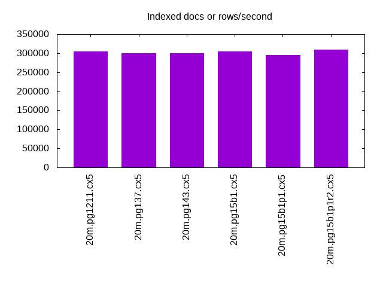
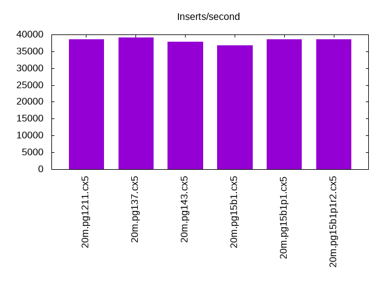
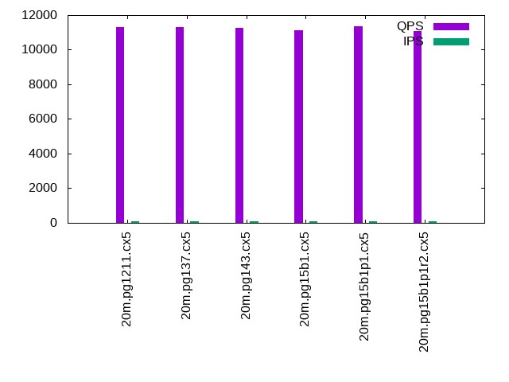
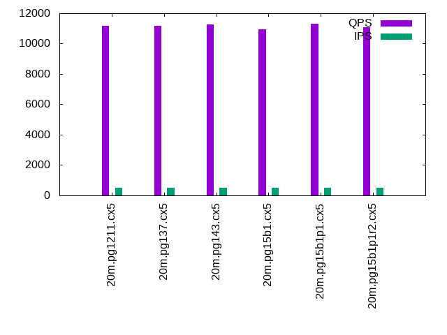
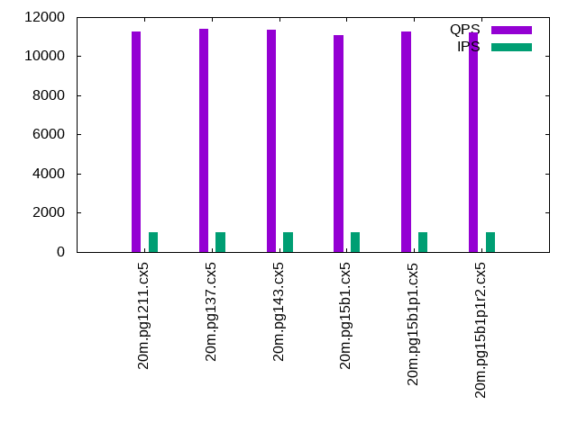

This is a report for the insert benchmark with 20M docs and 1 client(s). It is generated by scripts (bash, awk, sed) and Tufte might not be impressed. An overview of the insert benchmark is here and a short update is here. Below, by DBMS, I mean DBMS+version.config. An example is my8020.c10b40 where my means MySQL, 8020 is version 8.0.20 and c10b40 is the name for the configuration file.
The test server is an Intel NUC with 4 cores, 16G RAM and a Samsung 970 EVO. More details are here. Clients and the DBMS share one server. The per-database configs are in the per-database subdirectories here.
The tested DBMS are:
The numbers are inserts/s for l.i0 and l.i1, indexed docs (or rows) /s for l.x and queries/s for q*.2. The values are the average rate over the entire test for inserts (IPS) and queries (QPS). The range of values for IPS and QPS is split into 3 parts: bottom 25%, middle 50%, top 25%. Values in the bottom 25% have a red background, values in the top 25% have a green background and values in the middle have no color. A gray background is used for values that can be ignored because the DBMS did not sustain the target insert rate. Red backgrounds are not used when the minimum value is within 80% of the max value.
| dbms | l.i0 | l.x | l.i1 | q100.1 | q500.1 | q1000.1 |
|---|---|---|---|---|---|---|
| 20m.pg1211.cx5 | 102564 | 304545 | 38536 | 11317 | 11188 | 11260 |
| 20m.pg137.cx5 | 106952 | 300000 | 39139 | 11314 | 11194 | 11382 |
| 20m.pg143.cx5 | 101010 | 300000 | 37879 | 11248 | 11266 | 11337 |
| 20m.pg15b1.cx5 | 91743 | 304545 | 36697 | 11129 | 10942 | 11080 |
| 20m.pg15b1p1.cx5 | 104712 | 295588 | 38610 | 11334 | 11303 | 11245 |
This lists the average rate of inserts/s for the tests that do inserts concurrent with queries. For such tests the query rate is listed in the table above. The read+write tests are setup so that the insert rate should match the target rate every second. Cells that are not at least 95% of the target have a red background to indicate a failure to satisfy the target.
| dbms | q100.1 | q500.1 | q1000.1 |
|---|---|---|---|
| pg1211.cx5 | 100 | 500 | 999 |
| pg137.cx5 | 100 | 499 | 999 |
| pg143.cx5 | 100 | 499 | 999 |
| pg15b1.cx5 | 100 | 499 | 999 |
| pg15b1p1.cx5 | 100 | 499 | 999 |
| target | 100 | 500 | 1000 |
l.i0: load without secondary indexes. Graphs for performance per 1-second interval are here.
Average throughput:
Insert response time histogram: each cell has the percentage of responses that take <= the time in the header and max is the max response time in seconds. For the max column values in the top 25% of the range have a red background and in the bottom 25% of the range have a green background. The red background is not used when the min value is within 80% of the max value.
| dbms | 256us | 1ms | 4ms | 16ms | 64ms | 256ms | 1s | 4s | 16s | gt | max |
|---|---|---|---|---|---|---|---|---|---|---|---|
| pg1211.cx5 | 94.278 | 5.721 | 0.002 | 0.005 | |||||||
| pg137.cx5 | 98.350 | 1.648 | 0.001 | 0.005 | |||||||
| pg143.cx5 | 81.094 | 18.905 | 0.001 | 0.007 | |||||||
| pg15b1.cx5 | 0.530 | 99.470 | 0.004 | ||||||||
| pg15b1p1.cx5 | 97.492 | 2.508 | 0.001 | 0.004 |
Performance metrics for the DBMS listed above. Some are normalized by throughput, others are not. Legend for results is here.
ips qps rps rmbps wps wmbps rpq rkbpq wpi wkbpi csps cpups cspq cpupq dbgb1 dbgb2 rss maxop p50 p99 tag 102564 0 0 0.0 66.8 43.3 0.000 0.000 0.001 0.432 12489 42.5 0.122 17 1.9 5.2 0.0 0.005 103387 83309 20m.pg1211.cx5 106952 0 0 0.0 69.3 44.7 0.000 0.000 0.001 0.428 12935 43.5 0.121 16 1.9 5.2 0.0 0.005 107483 85507 20m.pg137.cx5 101010 0 0 0.0 67.3 43.4 0.000 0.000 0.001 0.439 12252 43.0 0.121 17 1.9 5.2 0.0 0.007 101092 94795 20m.pg143.cx5 91743 0 0 0.0 61.3 39.3 0.000 0.000 0.001 0.439 11049 41.8 0.120 18 1.9 5.2 0.0 0.004 92435 74619 20m.pg15b1.cx5 104712 0 0 0.0 67.4 43.5 0.000 0.000 0.001 0.426 12668 43.9 0.121 17 1.9 5.2 0.0 0.004 105185 85707 20m.pg15b1p1.cx5
l.x: create secondary indexes.
Average throughput:
Performance metrics for the DBMS listed above. Some are normalized by throughput, others are not. Legend for results is here.
ips qps rps rmbps wps wmbps rpq rkbpq wpi wkbpi csps cpups cspq cpupq dbgb1 dbgb2 rss maxop p50 p99 tag 304545 0 0 0.0 68.2 71.2 0.000 0.000 0.000 0.240 2015 23.6 0.007 3 3.7 8.6 0.0 0.005 NA NA 20m.pg1211.cx5 300000 0 0 0.0 64.5 66.3 0.000 0.000 0.000 0.226 1944 23.7 0.006 3 3.7 8.6 0.0 0.002 NA NA 20m.pg137.cx5 300000 0 0 0.0 57.5 61.2 0.000 0.000 0.000 0.209 1909 23.4 0.006 3 3.7 8.6 0.0 0.002 NA NA 20m.pg143.cx5 304545 0 0 0.0 67.3 71.5 0.000 0.000 0.000 0.240 2073 23.7 0.007 3 3.7 8.6 0.0 0.002 NA NA 20m.pg15b1.cx5 295588 0 0 0.0 56.8 60.7 0.000 0.000 0.000 0.210 1932 23.4 0.007 3 3.7 8.6 0.0 0.002 NA NA 20m.pg15b1p1.cx5
l.i1: continue load after secondary indexes created. Graphs for performance per 1-second interval are here.
Average throughput:
Insert response time histogram: each cell has the percentage of responses that take <= the time in the header and max is the max response time in seconds. For the max column values in the top 25% of the range have a red background and in the bottom 25% of the range have a green background. The red background is not used when the min value is within 80% of the max value.
| dbms | 256us | 1ms | 4ms | 16ms | 64ms | 256ms | 1s | 4s | 16s | gt | max |
|---|---|---|---|---|---|---|---|---|---|---|---|
| pg1211.cx5 | 99.852 | 0.121 | 0.024 | 0.003 | nonzero | 0.362 | |||||
| pg137.cx5 | 99.843 | 0.130 | 0.024 | 0.003 | nonzero | 0.412 | |||||
| pg143.cx5 | 99.851 | 0.121 | 0.027 | 0.001 | nonzero | 0.478 | |||||
| pg15b1.cx5 | 99.849 | 0.125 | 0.026 | 0.001 | 0.092 | ||||||
| pg15b1p1.cx5 | 99.855 | 0.117 | 0.027 | 0.002 | nonzero | 0.329 |
Performance metrics for the DBMS listed above. Some are normalized by throughput, others are not. Legend for results is here.
ips qps rps rmbps wps wmbps rpq rkbpq wpi wkbpi csps cpups cspq cpupq dbgb1 dbgb2 rss maxop p50 p99 tag 38536 0 0 0.0 196.5 65.7 0.000 0.000 0.005 1.746 9774 35.7 0.254 37 8.2 19.4 0.0 0.362 40069 10637 20m.pg1211.cx5 39139 0 0 0.0 202.1 68.1 0.000 0.000 0.005 1.783 9920 35.7 0.253 36 8.2 19.9 0.0 0.412 40506 9846 20m.pg137.cx5 37879 0 0 0.0 154.8 63.8 0.000 0.000 0.004 1.724 9567 35.8 0.253 38 8.2 20.8 0.0 0.478 39556 13981 20m.pg143.cx5 36697 0 0 0.0 172.6 63.7 0.000 0.000 0.005 1.778 9299 35.9 0.253 39 8.2 21.2 0.0 0.092 38058 13189 20m.pg15b1.cx5 38610 0 0 0.0 154.1 63.6 0.000 0.000 0.004 1.686 9733 36.4 0.252 38 8.2 20.6 0.2 0.329 40206 11935 20m.pg15b1p1.cx5
q100.1: range queries with 100 insert/s per client. Graphs for performance per 1-second interval are here.
Average throughput:
Query response time histogram: each cell has the percentage of responses that take <= the time in the header and max is the max response time in seconds. For max values in the top 25% of the range have a red background and in the bottom 25% of the range have a green background. The red background is not used when the min value is within 80% of the max value.
| dbms | 256us | 1ms | 4ms | 16ms | 64ms | 256ms | 1s | 4s | 16s | gt | max |
|---|---|---|---|---|---|---|---|---|---|---|---|
| pg1211.cx5 | 99.998 | 0.002 | 0.001 | nonzero | 0.006 | ||||||
| pg137.cx5 | 99.996 | 0.003 | 0.001 | nonzero | 0.006 | ||||||
| pg143.cx5 | 99.997 | 0.002 | 0.001 | nonzero | 0.007 | ||||||
| pg15b1.cx5 | 99.996 | 0.003 | 0.001 | 0.004 | |||||||
| pg15b1p1.cx5 | 99.997 | 0.002 | 0.001 | nonzero | 0.004 |
Insert response time histogram: each cell has the percentage of responses that take <= the time in the header and max is the max response time in seconds. For max values in the top 25% of the range have a red background and in the bottom 25% of the range have a green background. The red background is not used when the min value is within 80% of the max value.
| dbms | 256us | 1ms | 4ms | 16ms | 64ms | 256ms | 1s | 4s | 16s | gt | max |
|---|---|---|---|---|---|---|---|---|---|---|---|
| pg1211.cx5 | 99.993 | 0.007 | 0.005 | ||||||||
| pg137.cx5 | 99.993 | 0.007 | 0.005 | ||||||||
| pg143.cx5 | 99.993 | 0.007 | 0.005 | ||||||||
| pg15b1.cx5 | 99.965 | 0.035 | 0.006 | ||||||||
| pg15b1p1.cx5 | 99.958 | 0.042 | 0.006 |
Performance metrics for the DBMS listed above. Some are normalized by throughput, others are not. Legend for results is here.
ips qps rps rmbps wps wmbps rpq rkbpq wpi wkbpi csps cpups cspq cpupq dbgb1 dbgb2 rss maxop p50 p99 tag 100 11317 0 0.0 205.5 4.6 0.000 0.000 2.057 47.332 43496 28.0 3.843 99 8.3 10.3 0.0 0.006 11316 11176 20m.pg1211.cx5 100 11314 0 0.0 204.9 4.3 0.000 0.000 2.053 44.005 43493 28.1 3.844 99 8.3 10.2 0.0 0.006 11316 11188 20m.pg137.cx5 100 11248 0 0.0 197.0 4.4 0.000 0.000 1.972 44.712 43173 26.7 3.838 95 8.3 10.8 0.0 0.007 11252 11124 20m.pg143.cx5 100 11129 0 0.0 195.6 4.3 0.000 0.000 1.960 44.616 42698 26.6 3.837 96 8.3 10.8 0.0 0.004 11129 11012 20m.pg15b1.cx5 100 11334 0 0.0 197.9 4.4 0.000 0.000 1.983 44.693 43478 26.6 3.836 94 8.3 10.8 0.0 0.004 11332 11204 20m.pg15b1p1.cx5
q500.1: range queries with 500 insert/s per client. Graphs for performance per 1-second interval are here.
Average throughput:
Query response time histogram: each cell has the percentage of responses that take <= the time in the header and max is the max response time in seconds. For max values in the top 25% of the range have a red background and in the bottom 25% of the range have a green background. The red background is not used when the min value is within 80% of the max value.
| dbms | 256us | 1ms | 4ms | 16ms | 64ms | 256ms | 1s | 4s | 16s | gt | max |
|---|---|---|---|---|---|---|---|---|---|---|---|
| pg1211.cx5 | 99.984 | 0.011 | 0.005 | nonzero | 0.007 | ||||||
| pg137.cx5 | 99.984 | 0.011 | 0.005 | nonzero | 0.008 | ||||||
| pg143.cx5 | 99.980 | 0.014 | 0.006 | nonzero | 0.006 | ||||||
| pg15b1.cx5 | 99.979 | 0.015 | 0.006 | nonzero | 0.006 | ||||||
| pg15b1p1.cx5 | 99.981 | 0.014 | 0.006 | nonzero | 0.005 |
Insert response time histogram: each cell has the percentage of responses that take <= the time in the header and max is the max response time in seconds. For max values in the top 25% of the range have a red background and in the bottom 25% of the range have a green background. The red background is not used when the min value is within 80% of the max value.
| dbms | 256us | 1ms | 4ms | 16ms | 64ms | 256ms | 1s | 4s | 16s | gt | max |
|---|---|---|---|---|---|---|---|---|---|---|---|
| pg1211.cx5 | 99.992 | 0.008 | 0.010 | ||||||||
| pg137.cx5 | 99.994 | 0.006 | 0.009 | ||||||||
| pg143.cx5 | 99.976 | 0.024 | 0.015 | ||||||||
| pg15b1.cx5 | 99.982 | 0.018 | 0.011 | ||||||||
| pg15b1p1.cx5 | 99.965 | 0.035 | 0.008 |
Performance metrics for the DBMS listed above. Some are normalized by throughput, others are not. Legend for results is here.
ips qps rps rmbps wps wmbps rpq rkbpq wpi wkbpi csps cpups cspq cpupq dbgb1 dbgb2 rss maxop p50 p99 tag 500 11188 0 0.0 373.7 13.0 0.000 0.000 0.748 26.689 43112 28.6 3.853 102 9.7 12.7 0.0 0.007 11188 11044 20m.pg1211.cx5 499 11194 0 0.0 376.8 13.1 0.000 0.000 0.754 26.786 43141 28.6 3.854 102 9.7 12.8 0.0 0.008 11204 11044 20m.pg137.cx5 499 11266 0 0.0 376.0 12.4 0.000 0.000 0.753 25.408 43369 27.1 3.849 96 9.7 13.3 0.0 0.006 11268 11124 20m.pg143.cx5 499 10942 0 0.0 375.4 12.3 0.000 0.000 0.752 25.311 42102 27.2 3.848 99 9.7 13.3 0.0 0.006 10948 10820 20m.pg15b1.cx5 499 11303 0 0.0 375.9 12.4 0.000 0.000 0.753 25.398 43479 27.0 3.847 96 9.7 13.3 0.0 0.005 11301 11172 20m.pg15b1p1.cx5
q1000.1: range queries with 1000 insert/s per client. Graphs for performance per 1-second interval are here.
Average throughput:
Query response time histogram: each cell has the percentage of responses that take <= the time in the header and max is the max response time in seconds. For max values in the top 25% of the range have a red background and in the bottom 25% of the range have a green background. The red background is not used when the min value is within 80% of the max value.
| dbms | 256us | 1ms | 4ms | 16ms | 64ms | 256ms | 1s | 4s | 16s | gt | max |
|---|---|---|---|---|---|---|---|---|---|---|---|
| pg1211.cx5 | 99.956 | 0.034 | 0.009 | nonzero | 0.007 | ||||||
| pg137.cx5 | 99.957 | 0.034 | 0.009 | nonzero | 0.008 | ||||||
| pg143.cx5 | 99.953 | 0.037 | 0.010 | nonzero | 0.006 | ||||||
| pg15b1.cx5 | 99.953 | 0.037 | 0.010 | nonzero | 0.006 | ||||||
| pg15b1p1.cx5 | 99.954 | 0.036 | 0.010 | nonzero | 0.007 |
Insert response time histogram: each cell has the percentage of responses that take <= the time in the header and max is the max response time in seconds. For max values in the top 25% of the range have a red background and in the bottom 25% of the range have a green background. The red background is not used when the min value is within 80% of the max value.
| dbms | 256us | 1ms | 4ms | 16ms | 64ms | 256ms | 1s | 4s | 16s | gt | max |
|---|---|---|---|---|---|---|---|---|---|---|---|
| pg1211.cx5 | 98.313 | 1.667 | 0.019 | 0.035 | |||||||
| pg137.cx5 | 98.281 | 1.699 | 0.019 | 0.035 | |||||||
| pg143.cx5 | 98.359 | 1.631 | 0.010 | 0.044 | |||||||
| pg15b1.cx5 | 98.369 | 1.620 | 0.011 | 0.036 | |||||||
| pg15b1p1.cx5 | 98.393 | 1.597 | 0.010 | 0.035 |
Performance metrics for the DBMS listed above. Some are normalized by throughput, others are not. Legend for results is here.
ips qps rps rmbps wps wmbps rpq rkbpq wpi wkbpi csps cpups cspq cpupq dbgb1 dbgb2 rss maxop p50 p99 tag 999 11260 7 0.1 482.9 18.8 0.001 0.005 0.483 19.277 43532 29.0 3.866 103 12.0 15.8 0.0 0.007 11268 11108 20m.pg1211.cx5 999 11382 7 0.1 481.5 18.8 0.001 0.005 0.482 19.281 44015 29.1 3.867 102 12.0 15.8 0.0 0.008 11389 11220 20m.pg137.cx5 999 11337 6 0.1 512.5 17.5 0.001 0.005 0.513 17.935 43774 27.6 3.861 97 12.0 16.7 0.0 0.006 11347 11172 20m.pg143.cx5 999 11080 8 0.1 511.5 17.5 0.001 0.006 0.512 17.896 42752 27.6 3.858 100 12.0 16.7 0.0 0.006 11079 10922 20m.pg15b1.cx5 999 11245 6 0.1 512.0 17.5 0.001 0.005 0.513 17.935 43387 27.6 3.858 98 12.0 16.7 0.0 0.007 11252 11092 20m.pg15b1p1.cx5
l.i0: load without secondary indexes
Performance metrics for all DBMS, not just the ones listed above. Some are normalized by throughput, others are not. Legend for results is here.
ips qps rps rmbps wps wmbps rpq rkbpq wpi wkbpi csps cpups cspq cpupq dbgb1 dbgb2 rss maxop p50 p99 tag 102564 0 0 0.0 66.8 43.3 0.000 0.000 0.001 0.432 12489 42.5 0.122 17 1.9 5.2 0.0 0.005 103387 83309 20m.pg1211.cx5 106952 0 0 0.0 69.3 44.7 0.000 0.000 0.001 0.428 12935 43.5 0.121 16 1.9 5.2 0.0 0.005 107483 85507 20m.pg137.cx5 101010 0 0 0.0 67.3 43.4 0.000 0.000 0.001 0.439 12252 43.0 0.121 17 1.9 5.2 0.0 0.007 101092 94795 20m.pg143.cx5 91743 0 0 0.0 61.3 39.3 0.000 0.000 0.001 0.439 11049 41.8 0.120 18 1.9 5.2 0.0 0.004 92435 74619 20m.pg15b1.cx5 104712 0 0 0.0 67.4 43.5 0.000 0.000 0.001 0.426 12668 43.9 0.121 17 1.9 5.2 0.0 0.004 105185 85707 20m.pg15b1p1.cx5
l.x: create secondary indexes
Performance metrics for all DBMS, not just the ones listed above. Some are normalized by throughput, others are not. Legend for results is here.
ips qps rps rmbps wps wmbps rpq rkbpq wpi wkbpi csps cpups cspq cpupq dbgb1 dbgb2 rss maxop p50 p99 tag 304545 0 0 0.0 68.2 71.2 0.000 0.000 0.000 0.240 2015 23.6 0.007 3 3.7 8.6 0.0 0.005 NA NA 20m.pg1211.cx5 300000 0 0 0.0 64.5 66.3 0.000 0.000 0.000 0.226 1944 23.7 0.006 3 3.7 8.6 0.0 0.002 NA NA 20m.pg137.cx5 300000 0 0 0.0 57.5 61.2 0.000 0.000 0.000 0.209 1909 23.4 0.006 3 3.7 8.6 0.0 0.002 NA NA 20m.pg143.cx5 304545 0 0 0.0 67.3 71.5 0.000 0.000 0.000 0.240 2073 23.7 0.007 3 3.7 8.6 0.0 0.002 NA NA 20m.pg15b1.cx5 295588 0 0 0.0 56.8 60.7 0.000 0.000 0.000 0.210 1932 23.4 0.007 3 3.7 8.6 0.0 0.002 NA NA 20m.pg15b1p1.cx5
l.i1: continue load after secondary indexes created
Performance metrics for all DBMS, not just the ones listed above. Some are normalized by throughput, others are not. Legend for results is here.
ips qps rps rmbps wps wmbps rpq rkbpq wpi wkbpi csps cpups cspq cpupq dbgb1 dbgb2 rss maxop p50 p99 tag 38536 0 0 0.0 196.5 65.7 0.000 0.000 0.005 1.746 9774 35.7 0.254 37 8.2 19.4 0.0 0.362 40069 10637 20m.pg1211.cx5 39139 0 0 0.0 202.1 68.1 0.000 0.000 0.005 1.783 9920 35.7 0.253 36 8.2 19.9 0.0 0.412 40506 9846 20m.pg137.cx5 37879 0 0 0.0 154.8 63.8 0.000 0.000 0.004 1.724 9567 35.8 0.253 38 8.2 20.8 0.0 0.478 39556 13981 20m.pg143.cx5 36697 0 0 0.0 172.6 63.7 0.000 0.000 0.005 1.778 9299 35.9 0.253 39 8.2 21.2 0.0 0.092 38058 13189 20m.pg15b1.cx5 38610 0 0 0.0 154.1 63.6 0.000 0.000 0.004 1.686 9733 36.4 0.252 38 8.2 20.6 0.2 0.329 40206 11935 20m.pg15b1p1.cx5
q100.1: range queries with 100 insert/s per client
Performance metrics for all DBMS, not just the ones listed above. Some are normalized by throughput, others are not. Legend for results is here.
ips qps rps rmbps wps wmbps rpq rkbpq wpi wkbpi csps cpups cspq cpupq dbgb1 dbgb2 rss maxop p50 p99 tag 100 11317 0 0.0 205.5 4.6 0.000 0.000 2.057 47.332 43496 28.0 3.843 99 8.3 10.3 0.0 0.006 11316 11176 20m.pg1211.cx5 100 11314 0 0.0 204.9 4.3 0.000 0.000 2.053 44.005 43493 28.1 3.844 99 8.3 10.2 0.0 0.006 11316 11188 20m.pg137.cx5 100 11248 0 0.0 197.0 4.4 0.000 0.000 1.972 44.712 43173 26.7 3.838 95 8.3 10.8 0.0 0.007 11252 11124 20m.pg143.cx5 100 11129 0 0.0 195.6 4.3 0.000 0.000 1.960 44.616 42698 26.6 3.837 96 8.3 10.8 0.0 0.004 11129 11012 20m.pg15b1.cx5 100 11334 0 0.0 197.9 4.4 0.000 0.000 1.983 44.693 43478 26.6 3.836 94 8.3 10.8 0.0 0.004 11332 11204 20m.pg15b1p1.cx5
q500.1: range queries with 500 insert/s per client
Performance metrics for all DBMS, not just the ones listed above. Some are normalized by throughput, others are not. Legend for results is here.
ips qps rps rmbps wps wmbps rpq rkbpq wpi wkbpi csps cpups cspq cpupq dbgb1 dbgb2 rss maxop p50 p99 tag 500 11188 0 0.0 373.7 13.0 0.000 0.000 0.748 26.689 43112 28.6 3.853 102 9.7 12.7 0.0 0.007 11188 11044 20m.pg1211.cx5 499 11194 0 0.0 376.8 13.1 0.000 0.000 0.754 26.786 43141 28.6 3.854 102 9.7 12.8 0.0 0.008 11204 11044 20m.pg137.cx5 499 11266 0 0.0 376.0 12.4 0.000 0.000 0.753 25.408 43369 27.1 3.849 96 9.7 13.3 0.0 0.006 11268 11124 20m.pg143.cx5 499 10942 0 0.0 375.4 12.3 0.000 0.000 0.752 25.311 42102 27.2 3.848 99 9.7 13.3 0.0 0.006 10948 10820 20m.pg15b1.cx5 499 11303 0 0.0 375.9 12.4 0.000 0.000 0.753 25.398 43479 27.0 3.847 96 9.7 13.3 0.0 0.005 11301 11172 20m.pg15b1p1.cx5
q1000.1: range queries with 1000 insert/s per client
Performance metrics for all DBMS, not just the ones listed above. Some are normalized by throughput, others are not. Legend for results is here.
ips qps rps rmbps wps wmbps rpq rkbpq wpi wkbpi csps cpups cspq cpupq dbgb1 dbgb2 rss maxop p50 p99 tag 999 11260 7 0.1 482.9 18.8 0.001 0.005 0.483 19.277 43532 29.0 3.866 103 12.0 15.8 0.0 0.007 11268 11108 20m.pg1211.cx5 999 11382 7 0.1 481.5 18.8 0.001 0.005 0.482 19.281 44015 29.1 3.867 102 12.0 15.8 0.0 0.008 11389 11220 20m.pg137.cx5 999 11337 6 0.1 512.5 17.5 0.001 0.005 0.513 17.935 43774 27.6 3.861 97 12.0 16.7 0.0 0.006 11347 11172 20m.pg143.cx5 999 11080 8 0.1 511.5 17.5 0.001 0.006 0.512 17.896 42752 27.6 3.858 100 12.0 16.7 0.0 0.006 11079 10922 20m.pg15b1.cx5 999 11245 6 0.1 512.0 17.5 0.001 0.005 0.513 17.935 43387 27.6 3.858 98 12.0 16.7 0.0 0.007 11252 11092 20m.pg15b1p1.cx5
Insert response time histogram
256us 1ms 4ms 16ms 64ms 256ms 1s 4s 16s gt max tag 0.000 94.278 5.721 0.002 0.000 0.000 0.000 0.000 0.000 0.000 0.005 pg1211.cx5 0.000 98.350 1.648 0.001 0.000 0.000 0.000 0.000 0.000 0.000 0.005 pg137.cx5 0.000 81.094 18.905 0.001 0.000 0.000 0.000 0.000 0.000 0.000 0.007 pg143.cx5 0.000 0.530 99.470 0.000 0.000 0.000 0.000 0.000 0.000 0.000 0.004 pg15b1.cx5 0.000 97.492 2.508 0.001 0.000 0.000 0.000 0.000 0.000 0.000 0.004 pg15b1p1.cx5
TODO - determine whether there is data for create index response time
Insert response time histogram
256us 1ms 4ms 16ms 64ms 256ms 1s 4s 16s gt max tag 0.000 0.000 99.852 0.121 0.024 0.003 nonzero 0.000 0.000 0.000 0.362 pg1211.cx5 0.000 0.000 99.843 0.130 0.024 0.003 nonzero 0.000 0.000 0.000 0.412 pg137.cx5 0.000 0.000 99.851 0.121 0.027 0.001 nonzero 0.000 0.000 0.000 0.478 pg143.cx5 0.000 0.000 99.849 0.125 0.026 0.001 0.000 0.000 0.000 0.000 0.092 pg15b1.cx5 0.000 0.000 99.855 0.117 0.027 0.002 nonzero 0.000 0.000 0.000 0.329 pg15b1p1.cx5
Query response time histogram
256us 1ms 4ms 16ms 64ms 256ms 1s 4s 16s gt max tag 99.998 0.002 0.001 nonzero 0.000 0.000 0.000 0.000 0.000 0.000 0.006 pg1211.cx5 99.996 0.003 0.001 nonzero 0.000 0.000 0.000 0.000 0.000 0.000 0.006 pg137.cx5 99.997 0.002 0.001 nonzero 0.000 0.000 0.000 0.000 0.000 0.000 0.007 pg143.cx5 99.996 0.003 0.001 0.000 0.000 0.000 0.000 0.000 0.000 0.000 0.004 pg15b1.cx5 99.997 0.002 0.001 nonzero 0.000 0.000 0.000 0.000 0.000 0.000 0.004 pg15b1p1.cx5
Insert response time histogram
256us 1ms 4ms 16ms 64ms 256ms 1s 4s 16s gt max tag 0.000 0.000 99.993 0.007 0.000 0.000 0.000 0.000 0.000 0.000 0.005 pg1211.cx5 0.000 0.000 99.993 0.007 0.000 0.000 0.000 0.000 0.000 0.000 0.005 pg137.cx5 0.000 0.000 99.993 0.007 0.000 0.000 0.000 0.000 0.000 0.000 0.005 pg143.cx5 0.000 0.000 99.965 0.035 0.000 0.000 0.000 0.000 0.000 0.000 0.006 pg15b1.cx5 0.000 0.000 99.958 0.042 0.000 0.000 0.000 0.000 0.000 0.000 0.006 pg15b1p1.cx5
Query response time histogram
256us 1ms 4ms 16ms 64ms 256ms 1s 4s 16s gt max tag 99.984 0.011 0.005 nonzero 0.000 0.000 0.000 0.000 0.000 0.000 0.007 pg1211.cx5 99.984 0.011 0.005 nonzero 0.000 0.000 0.000 0.000 0.000 0.000 0.008 pg137.cx5 99.980 0.014 0.006 nonzero 0.000 0.000 0.000 0.000 0.000 0.000 0.006 pg143.cx5 99.979 0.015 0.006 nonzero 0.000 0.000 0.000 0.000 0.000 0.000 0.006 pg15b1.cx5 99.981 0.014 0.006 nonzero 0.000 0.000 0.000 0.000 0.000 0.000 0.005 pg15b1p1.cx5
Insert response time histogram
256us 1ms 4ms 16ms 64ms 256ms 1s 4s 16s gt max tag 0.000 0.000 99.992 0.008 0.000 0.000 0.000 0.000 0.000 0.000 0.010 pg1211.cx5 0.000 0.000 99.994 0.006 0.000 0.000 0.000 0.000 0.000 0.000 0.009 pg137.cx5 0.000 0.000 99.976 0.024 0.000 0.000 0.000 0.000 0.000 0.000 0.015 pg143.cx5 0.000 0.000 99.982 0.018 0.000 0.000 0.000 0.000 0.000 0.000 0.011 pg15b1.cx5 0.000 0.000 99.965 0.035 0.000 0.000 0.000 0.000 0.000 0.000 0.008 pg15b1p1.cx5
Query response time histogram
256us 1ms 4ms 16ms 64ms 256ms 1s 4s 16s gt max tag 99.956 0.034 0.009 nonzero 0.000 0.000 0.000 0.000 0.000 0.000 0.007 pg1211.cx5 99.957 0.034 0.009 nonzero 0.000 0.000 0.000 0.000 0.000 0.000 0.008 pg137.cx5 99.953 0.037 0.010 nonzero 0.000 0.000 0.000 0.000 0.000 0.000 0.006 pg143.cx5 99.953 0.037 0.010 nonzero 0.000 0.000 0.000 0.000 0.000 0.000 0.006 pg15b1.cx5 99.954 0.036 0.010 nonzero 0.000 0.000 0.000 0.000 0.000 0.000 0.007 pg15b1p1.cx5
Insert response time histogram
256us 1ms 4ms 16ms 64ms 256ms 1s 4s 16s gt max tag 0.000 0.000 98.313 1.667 0.019 0.000 0.000 0.000 0.000 0.000 0.035 pg1211.cx5 0.000 0.000 98.281 1.699 0.019 0.000 0.000 0.000 0.000 0.000 0.035 pg137.cx5 0.000 0.000 98.359 1.631 0.010 0.000 0.000 0.000 0.000 0.000 0.044 pg143.cx5 0.000 0.000 98.369 1.620 0.011 0.000 0.000 0.000 0.000 0.000 0.036 pg15b1.cx5 0.000 0.000 98.393 1.597 0.010 0.000 0.000 0.000 0.000 0.000 0.035 pg15b1p1.cx5